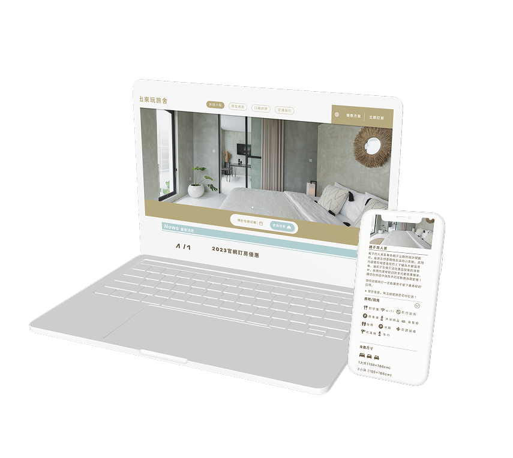
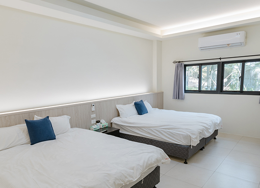
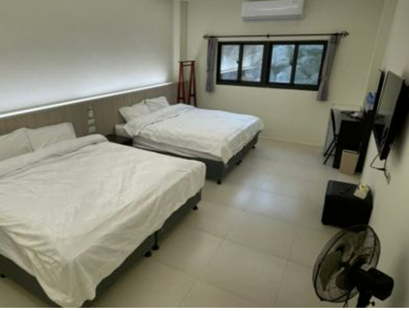
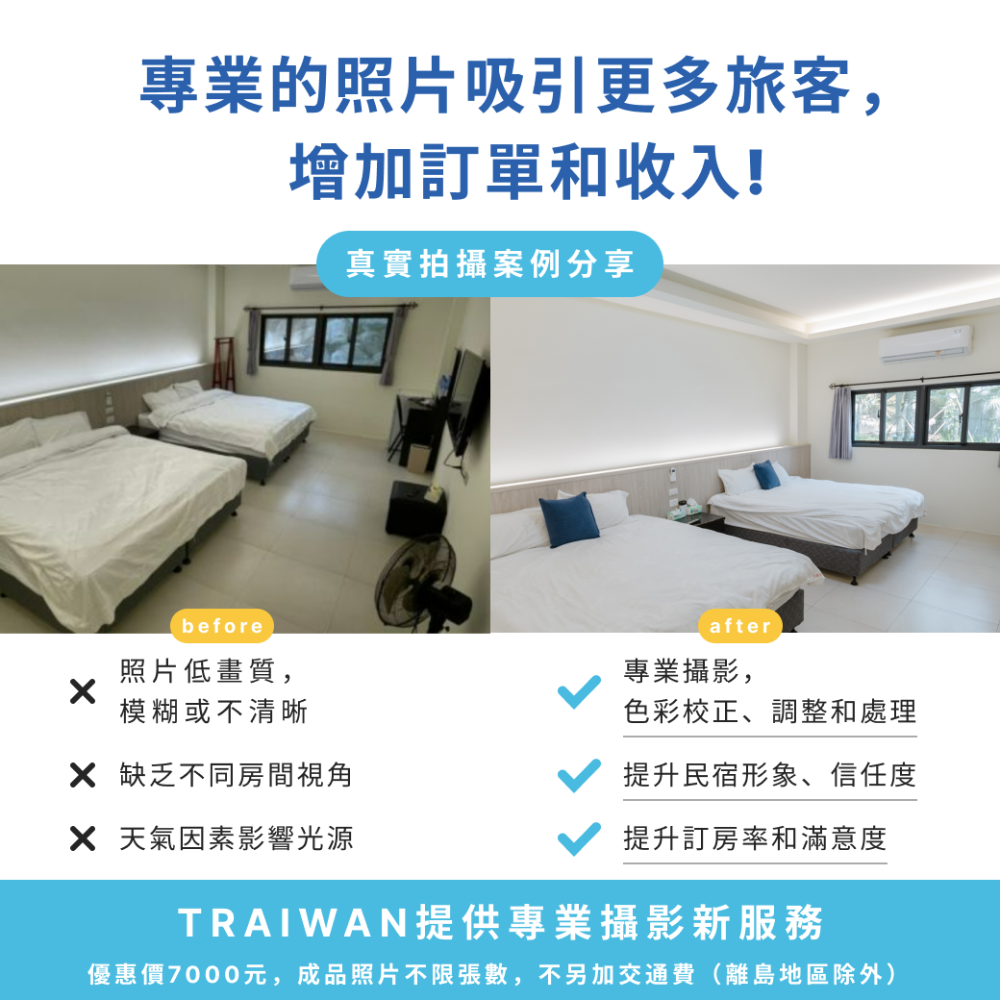

從介面設計到攝影方案，補足 SaaS 官網模版的最後一塊缺口。
Traiwan 提供旅宿業「雲端管理」、「官方線上訂房」及「通路整合」SaaS 服務。我的任務是在不改動程式邏輯的前提下，於 4 週內優化官網模版的 UI 視覺與 UX，提升旅宿業主的上架誘因與旅客轉化率。

介面煥然一新——而真正的關鍵，藏在下一個細節裡。
幫客戶調整官網配色時，業務會把民宿老闆提供的素材一起帶進來。就在那個當下，我親眼看到了問題：版型是新的，但照片是十年前拍的。昏黃的燈光、歪斜的構圖、低解析度的空間感——無論介面設計做得多好，這些照片都會把整體質感拉回原點。


這不是 UI 問題。這是內容缺口。好的版型，需要好的內容才能發揮效果。
UI 是容器，
內容才是說服力的來源。
旅宿業主選擇升級官網，是因為想吸引更多旅客。但如果官網上的照片無法呈現真實的空間氛圍，再好的版型也無法完成這件事。
設計能做的事有邊界。發現邊界在哪裡，然後補上——才是真正解決問題。
向 BD 提出攝影方案的想法，說明照片品質是目前影響轉化率的關鍵缺口。老闆決定執行，團隊一起推進。我從零開始建立這個服務：
評估接案攝影師的風格與配合度，確認能穩定產出旅宿空間質感。
與攝影師確認拍攝規格與交付標準，建立可複製的品質基準。
攝影師端的合作費用 ／ 民宿業主端的方案售價，讓服務能規模化運作。
對齊執行細節，確保每一次交付的服務品質一致。

讓每一個升級版型的民宿業主，都能同步擁有匹配品質的視覺內容。
民宿業主願意持續更新版型，官網不再是一次性升級。
攝影方案在客戶之間互相推薦，成為自然擴散的招牌服務。
從「UI 升級工具」延伸為「品牌視覺整體解決方案」。
沒有一個大數字，但有一個更真實的結果：
客戶開始把這個服務介紹給他們的朋友。
設計師的工作是把介面做好。但如果只盯著介面，很容易錯過真正影響用戶體驗的那個變數。
發現「照片才是問題」不需要很厲害的分析能力——需要的是願意把眼睛從 Figma 上移開，看一看真實的使用情境。
從那個觀察出發，到提案、找攝影師、定價、執行，也是我開始理解 PM 思維和設計師思維差在哪裡的時刻。